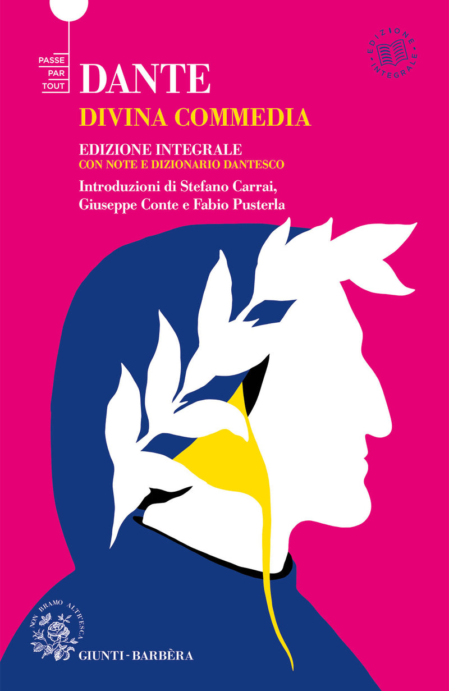

7:22 · 1 OPERE
L'Italia da fare e l'Italia da dimenticare.
Il filo del discorso
Lettura di una premessa dedicata al carattere italiano e alla sua rappresentazione ironica. Caldarella contesta l’enfasi sulle differenze fra Nord e Sud, riconducendole soprattutto alle diverse oligarchie e condizioni sociali. Attraverso d’Azeglio, il verismo e Dante, propone una lettura polemica della continuità dei comportamenti collettivi e della classe dirigente italiana.
I libri nel discorso

Divina Commedia
Copertina: Giunti Barbera · Passepartout, 2021 · edizione di riferimento
La Divina Commedia è citata come rappresentazione allegorica dell’Italia e dei suoi caratteri.
Passaggio 4:53 ↗ · Fonti e libro ↗Minutaggi ricavati da testi automatici, da riascoltare. Le identificazioni probabili sono segnalate accanto ai libri.